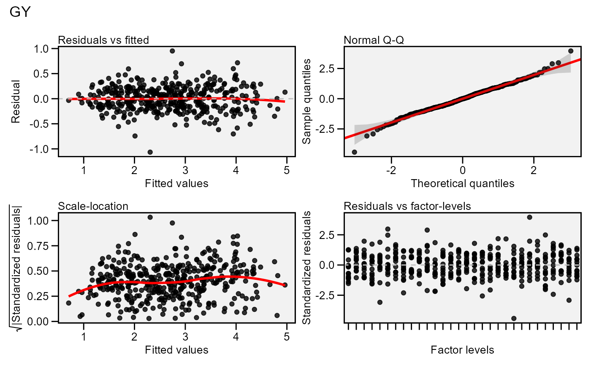
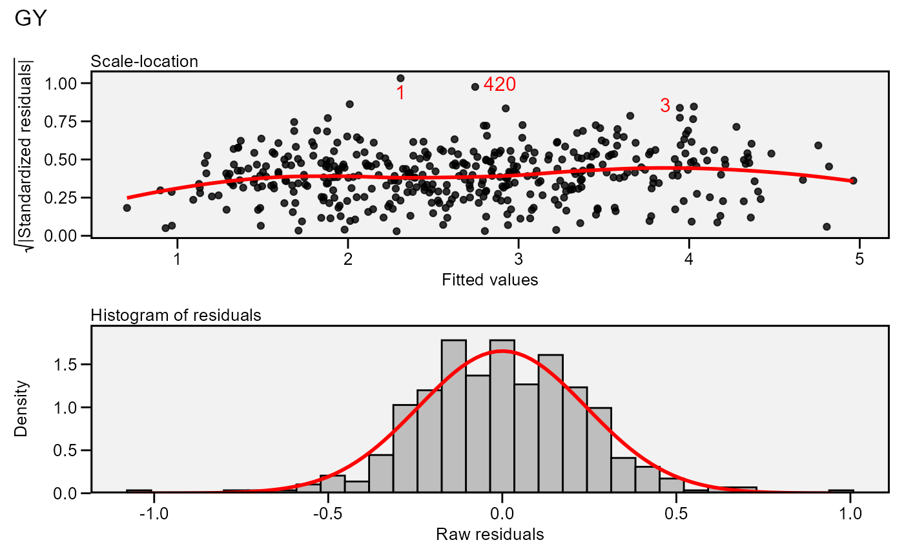

Residual plots for a output model of class anova_joint. Seven types
of plots are produced: (1) Residuals vs fitted, (2) normal Q-Q plot for the
residuals, (3) scale-location plot (standardized residuals vs Fitted Values),
(4) standardized residuals vs Factor-levels, (5) Histogram of raw residuals
and (6) standardized residuals vs observation order, and (7) 1:1 line plot.
Usage
# S3 method for class 'anova_joint'
plot(x, ...)Arguments
- x
An object of class
anova_joint.- ...
Additional arguments passed on to the function
residual_plots()
Author
Tiago Olivoto tiagoolivoto@gmail.com
Examples
# \donttest{
library(metan)
model <- anova_joint(data_ge, ENV, GEN, REP, GY)
#> variable GY
#> ---------------------------------------------------------------------------
#> Joint ANOVA table
#> ---------------------------------------------------------------------------
#> Source Df Sum Sq Mean Sq F value Pr(>F)
#> ENV 13.00 279.57 21.5057 62.33 3.90e-17
#> REP(ENV) 28.00 9.66 0.3451 3.57 3.59e-08
#> GEN 9.00 13.00 1.4439 5.41 3.44e-06
#> GEN:ENV 117.00 31.22 0.2668 2.76 1.01e-11
#> ENV/GEN 130.00 310.79 2.3907 24.72 9.58e-95
#> ENV/G1 13.00 32.69 2.5146 26.01 1.90e-39
#> ENV/G10 13.00 42.71 3.2855 33.98 4.72e-48
#> ENV/G2 13.00 34.03 2.6180 27.08 1.11e-40
#> ENV/G3 13.00 30.39 2.3380 24.18 2.83e-37
#> ENV/G4 13.00 26.80 2.0618 21.32 1.06e-33
#> ENV/G5 13.00 23.47 1.8050 18.67 3.66e-30
#> ENV/G6 13.00 22.02 1.6937 17.52 1.47e-28
#> ENV/G7 13.00 21.99 1.6917 17.50 1.58e-28
#> ENV/G8 13.00 32.45 2.4961 25.82 3.18e-39
#> ENV/G9 13.00 44.24 3.4028 35.19 2.97e-49
#> Residuals 252.00 24.37 0.0967 NA NA
#> CV(%) 11.63 NA NA NA NA
#> MSR+/MSR- 6.71 NA NA NA NA
#> OVmean 2.67 NA NA NA NA
#> ---------------------------------------------------------------------------
#>
#> All variables with significant (p < 0.05) genotype-vs-environment interaction
#> Done!
plot(model)

plot(model,
which = c(3, 5),
nrow = 2,
labels = TRUE,
size.lab.out = 4)
#> Warning: The dot-dot notation (`..density..`) was deprecated in ggplot2 3.4.0.
#> ℹ Please use `after_stat(density)` instead.
#> ℹ The deprecated feature was likely used in the metan package.
#> Please report the issue at <https://github.com/nepem-ufsc/metan/issues>.

# }